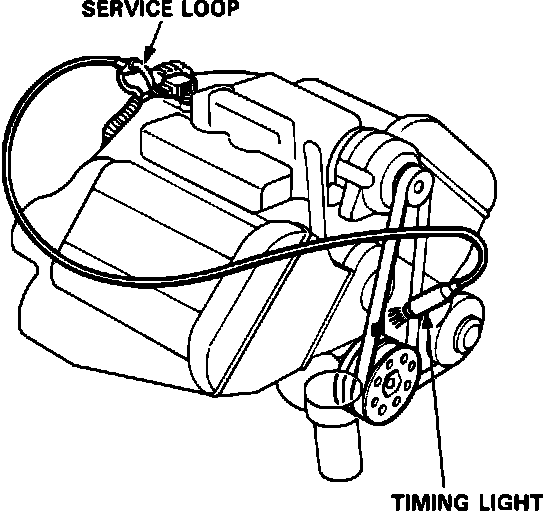
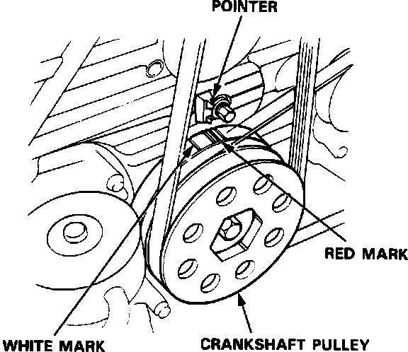
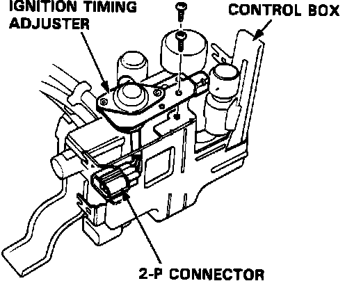

Ignition Timing: Adjustments
1. Start the engine and allow it to warm up (cooling fan comes on).
Timing Light Hookup:

2. Connect a timing light to the engine; while the engine idles, point the light toward the pointer on the timing belt cover.
Timing Mark:

3. Inspect ignition timing at idle.
M/T: 15°+/-2° BTDC (RED) at 800+/-50 (rpm)
A/T: 15°+/-2° BTDC (RED) at 750+/-50 (rpm) in gear
4. Adjust ignition timing, if necessary, by turning the adjusting screw on the ignition timing adjuster in control box.
5. Remove the control box cover.
Ignition Timing Adjuster:

6. Remove the 2 screws from the control box then disconnect the 2-P connector from the ignition timing adjuster.
7. Remove the ignition timing adjuster from the control box.
Ignition Timing Adjuster:

8. Drill the 2 rivets off with a 3/16 in. drill bit, then separate the stay cover from the adjuster. Re-connect the adjuster to the car, start the engine, and turn the adjusting screw counterclockwise to retard the timing, or clockwise to advance it, as necessary.
CAUTION: Do not damage the adjuster when removing the rivets.
9. After adjusting, reinstall the stay cover to the ignition timing adjuster with new rivets.